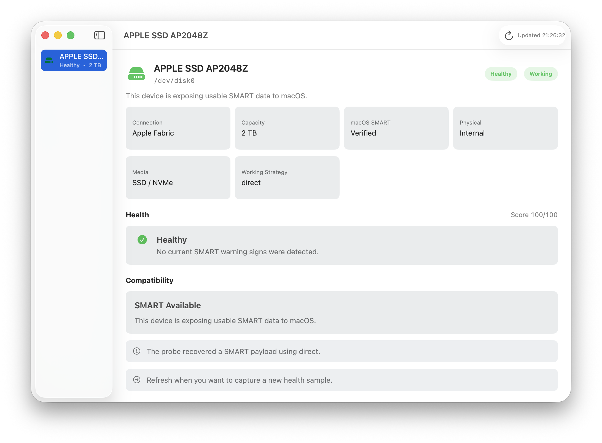

The drive is only one part of the path
An external SATA drive usually sits behind a USB-to-SATA bridge. Health software sends SMART commands through that bridge using a passthrough protocol such as SAT. Every layer must cooperate: the drive, bridge firmware, cable or adapter, hub, USB controller, and operating system.
Why Windows can behave differently
Windows applications may use vendor drivers, device-specific interfaces, or passthrough behavior that macOS does not expose. Seeing SMART data in Windows proves that the drive records it; it does not prove that the same enclosure presents it through macOS.
What is worth trying
- Connect the enclosure directly instead of through a hub.
- Try a known data-capable USB-C adapter or cable.
- Check whether the enclosure vendor offers newer bridge firmware.
- Test the physical drive in a different enclosure known to support SAT on macOS.
- Keep a working backup even when health data is unavailable.
What software cannot do: An application cannot recover SMART bytes that the macOS device stack never exposes. A kernel or DriverKit component also cannot invent bridge-firmware support that is absent.
What DiskLoom does differently
DiskLoom tries appropriate probe strategies and separates drive condition from transport compatibility. If the bridge blocks SMART, it reports the limitation as unknown rather than declaring the drive healthy or failed.
